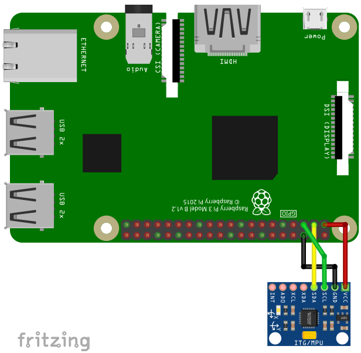

The MPU6050 is a acceleration sensor and gyroscope using the I2C-protocol for communication.
To use the MPU6050, import the library mpu6050
import mpu6050Open()
Open(interface)
Open(interface, address)Open the MPU6050 on interface interface with I2C address
address.
interface
"/dev/i2c-1"address
0x68.Example:
Open("/dev/i2c-1", 0x68)a = Acceleration()Measure acceleration in x, y and z direction.
a
a[0]: acceleration in xa[1]: acceleration in ya[2]: acceleration in zg = Gyroscope()Read gyroscope data in x, y and z direction.
g
g[0]: in xg[1]: in yg[2]: in zt = Temperature()Measure temperature in °C.
t
GyroscopeConfig(range)Sets the full scale range of the gyroscope. range can
have the values 250, 500, 1000, or 2000 in °/s.
range
AccelerationConfig(range)Sets the full scale range of the acceleromter. range can
have the values 2, 4, 8, or 16 in g (9.81 m/s^2).
range
Close()Close the MPU6050 device.
For running this example, you need a MPU6050. SmallBASIC PiGPIO 2 is using the I2C-protocol for communication. The Raspberry Pi supports this protocol in hardware, but by default the protocol is disabled. Therefore you have to setup I2C as described here.
In the next step please wire the sensor as shown in the following image.

The I2C bus is using pin 2 (SDA) and 3 (SCL). The sensor can be driven with a voltage of 3.3V.
import mpu6050
mpu6050.open("/dev/i2c-1", 0x68)
delay(500)
for ii = 1 to 1000
A = mpu6050.Acceleration()
G = mpu6050.Gyroscope()
T = mpu6050.Temperature()
locate 5,0
print "Acc: [";
print USING "##.00 "; A[0], A[1], A[2];
print "] Gryo: [";
print USING "####.00 "; G[0], G[1], G[2];
print "] Temp : ";
print USING "##.00 "; T
delay(100)
next